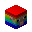
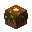

热门游戏
| 项目 | 类型 | 介绍 | 特色 | |
|---|---|---|---|---|
| 幸运方块起床 | 竞赛类 | 保护你的床不被对方挖掘 利用从村民处换来的东西 来一次绝地反击 |
幸运方块支持 独特的成就、玩法 能力升级商人 任意规模大小的队伍 允许玩家制作地图（附上作者） |
|
| 战墙X | 在墙倒下前，你需要尽可能的获取资源
墙倒下后，杀死对方凋零与敌人 与此同时，你也需要保护己方凋零 因为它能给你带来无尽的复活 |
挖矿有概率弹出特殊奖励箱 开局前的职业/笼子选择 你死后可以对他人施加赏金 结束后你会获得一张地图以庆祝 |
||
| 方块危机 | 在众多道具方块中占领你喜欢的方块 获取大量方块道具的同时 你也要小心前面飞来的火球 还有即将发射的TNT大炮 |
直接抛射的烈焰弹 方块高度自定义 允许占领他人方块 |
||
| 空岛战争 | 在岛上进行搭建方块，搜寻所有物资 最终将所有人击杀 能生存到最后的都是王者 你敢来挑战吗？ |
幸运方块支持 购买职业后，均可开局附赠方块 开箱获得僵尸以保护自己 TNT雨事件的加入 |
||
| 箭与远征 | 你可以选择击杀人或击杀僵尸 你的血量有限，你需要尽量生存下去 尽管最终迎接你的是无尽的敌人 |
开始前的职业选择 击杀回血功能 特殊武器奖励功能 末日僵尸生存玩法 |
||
| 职业战争 | 多样变化的职业，你更喜欢哪个？ 或许你还不知道，但一番战斗后 你或许会渐渐爱上这个职业 又或许会慢慢厌恶这个职业 这大概就是职业人的快乐吧~ |
多次死亡、击杀，关监狱功能 箭道系统(大师&e2&7段) 赏金系统(大师&a5&7段) ⚠️ 沉迷后取消活动资格功能 |
||
| 迷你战墙 | 墙会在几秒后倒下 你需要将凋零与敌人击杀 最终赢得最后的胜利 |
你可以进行职业选择 凋零血随时间减少而减少 凋零的高伤害攻击 所挖方块变成羊毛 恢复箭的CD与最大箭数 |
||
| 饥饿游戏 | 在众多玩家中迅速搜寻装备 然后将最近的玩家击杀，越快越好 因为一段时间后 对面的运气，会比你好上几倍 |
开始前的职业选择 速燃TNT、空投系统 空投派对功能 决赛圈功能、死亡竞赛功能 指南针可指附近玩家; |
||
| 龙蛋战争 | 与起床战争一样，但这次你要守护龙蛋 在这里，装备会更强劲 是时候考验你的PVP技术了 你能成为龙蛋最后的保护者吗 |
产块修复，资源在家即可获取 技能获取，购买后可使用技能 死亡不掉落功能 一键装备功能 |
||
| TNTrun | 休闲类 | 你需要一直跑下去 同时，脚下的方块会不断消失 你可以用你的二段跳 以此来避免掉入虚空中 |
二段跳功能 沙子消失时会有清脆的挖沙声 |
|
| 丢鸡蛋 | 拿着你的铲子，右键发射鸡蛋 鸡蛋触碰的方块会消失 注意点敌人的鸡蛋，与你的脚下 |
丢到TNT时的范围爆炸 发射鸡蛋时的悦耳音效 |
||
| 塔防战争 | 喜欢植物大战僵尸？不如试试这个吧 难道&e3D&7版的游戏，不比&a2D&7好看吗 或许你应该试着挑战困难模式 到时你会发现你的塔是多么渺小 |
少量职业选择 玩家可加入僵尸阵营 每一定波数释放BOSS 开启飞行模式 |
||
|  | 彩虹大作战 | 手上会拿着一个随机颜色的粘土块 你需要尽快跑到脚下对应的方块位置 同时也要注意方块消失所剩余时间 |
特殊的道具获取 随着时间增大而加快速度 根据存活时间进行排名 可开/关游戏中的音乐 |
|
| 彩蛋射击 | 用雪球砸向对方，将对方送回基地 同时小心满天飞舞的雪球 这里会给你带来无尽的快乐与胜利 |
多达&e8&7种类型的模式 游戏中的道具购买 击中方块染色功能 |
||
| 炸弹投手 | 随着时间减少，你手上会得到一个炸弹 对准敌人基地，将其区域炸空 又或者对准敌人，将其炸没 |
炸弹具有一定的粘性 最多储存&e3&7个炸弹 炸弹爆炸CD减少 |
||
| 烫手的山芋 | 随机选择一位幸运儿成为炸弹人 你需要躲开他，越远越好 你以为这样就安全了吗？ 不，或许下个幸运儿就是你 |
游戏特殊道具获取 决赛回合功能 移动速度up |
||
|  | 超级派对游戏 | 分为11个迷你游戏，实际游戏只有8个 每个游戏开始前都会有介绍 你需要尽可能的获得星星以获胜 |
奖励蝙蝠/奖励猪 游戏结束的最终的排名 击杀动物时无需蓄力 |
|
| 雷神之锤 | 用你手上的锄头，右键发射炮弹 利用指南针，尽可能的击中敌人 也尽可能的小心被敌人击中 |
指南针的指人效果 鼠标左键进行冲刺 一定时长的子弹CD |
||
| 龙逃生 | 在末影龙的追杀下，你能安心跑酷吗？ 或许你还不知道答案，但很快 你就会被这种紧张感所屈服 |
脚步、职业选择 拥有记录功能 方块会被龙弹飞 |
||
| CS:GO | 枪战类 | 经典游戏的复原，与CSGO玩法类似 你需要阻止对方拆包、安包 也需要小心背后的枪指着你的脑门 注意：材质包可在群内获取 |
支持中途加入 燃烧弹、烟雾弹、诱饵弹的还原 金钱获取与CSGO类似 回合减少，避免长时间单一游戏 |